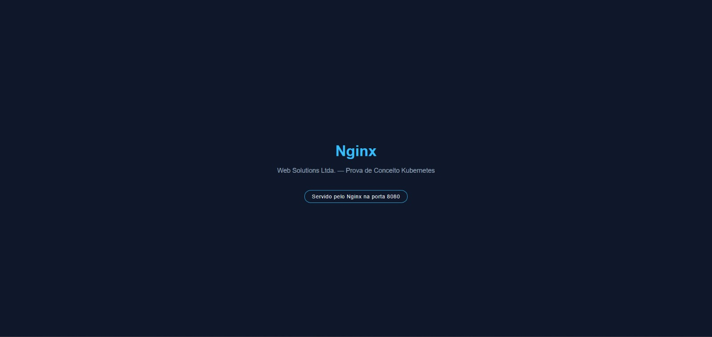
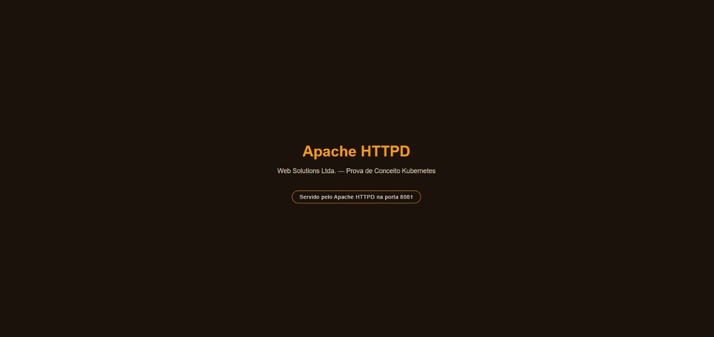

A Web Solutions Ltda., empresa de desenvolvimento e hospedagem de aplicações web sediada em Taboão, São Paulo, viu sua demanda crescer exponencialmente nos últimos meses. O modelo atual de hospedagem — cada aplicação implantada diretamente em uma máquina virtual dedicada — não acompanha mais esse ritmo.
Alocação de recursos inflexível. Cada VM reserva CPU/memória de forma fixa, mesmo quando a aplicação está ociosa.
Escalabilidade manual e lenta. Atender picos de demanda depende de intervenção humana, atrasando a resposta ao cliente.
Conflitos de dependência. Ambientes divididos entre aplicações geram dores de cabeça constantes para a equipe de operações.
O resultado direto: tempo de resposta lento para novas implantações e atualizações, impactando a agilidade da empresa e a satisfação dos clientes.
A resposta a esses três problemas é a conteinerização com Docker combinada à orquestração com Kubernetes:
Como prova de conceito, esta solução implanta dois servidores web independentes no mesmo cluster — Nginx e Apache HTTPD — demonstrando que aplicações diferentes podem compartilhar a mesma infraestrutura sem conflito, cada uma acessível em sua própria porta.
Cada serviço roda em seu próprio Deployment (2 réplicas) e é exposto por um
Service dedicado, dentro do namespace web-solutions:
nginx:1.27-alpine e
httpd:2.4-alpine — leves e com baixa superfície de ataque.Serviço acessível em http://localhost:8080, servido pelo Deployment
nginx-deployment através do Service nginx-service (LoadBalancer).

docs/screenshots/nginx.png ]Serviço acessível em http://localhost:8081, servido pelo Deployment
apache-deployment através do Service apache-service (LoadBalancer).

docs/screenshots/apache.png ]| Problema relatado pela Web Solutions | Como a solução resolve |
|---|---|
| Alocação de recursos inflexível | resources.requests/limits definidos por serviço, compartilhando o mesmo
cluster sem um consumir os recursos do outro. |
| Escalabilidade manual e lenta | kubectl scale ajusta réplicas em segundos; HPA escala automaticamente com
base em CPU, de forma independente para cada serviço. |
| Conflitos de dependência/ambiente | Cada serviço isolado em sua própria imagem Docker, sem compartilhar dependências de sistema operacional. |
| Tempo de resposta para implantar/atualizar | Deploy declarativo via kubectl apply, com rolling update sem downtime. |
O mesmo padrão — Dockerfile otimizado + Deployment + Service — é replicável para qualquer nova aplicação da Web Solutions, preparando o terreno para a migração completa do restante do portfólio.
Esta prova de conceito demonstra, na prática, que Docker e Kubernetes resolvem as três dores centrais relatadas pela Web Solutions — alocação de recursos, escalabilidade e conflitos de ambiente — com uma arquitetura simples, replicável e pronta para crescer.